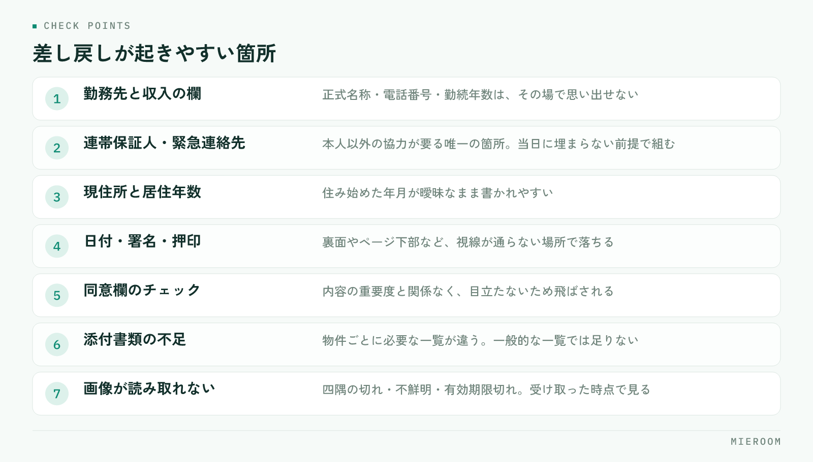

申込書の不備が多いと、審査が止まり、お客様に連絡し直し、管理会社にも謝ることになります。担当者の注意力の問題に見えますが、実際にはどこで何を確認するかが決まっていないだけであることがほとんどです。この記事では、差し戻しが起きやすい箇所と、その場で防ぐ手順を整理します。
この記事の結論
申込書の不備は、受け取ったあとに点検するのをやめ、お客様が目の前にいるうちに確認を終える形に変えると大きく減ります。確認する箇所は決まっているので、必要なのは新しい様式ではなく、確認の順番です。
不備の本当のコストは、書き直しの時間ではない
不備が出たときに失われるのは、記入し直す数分ではありません。止まっている時間そのものです。
申込書が差し戻されると、まずお客様に連絡がつくまで待ちます。次に、記入や書類の再送を待ちます。そのあとにようやく審査が動き出します。連絡がつくのが翌日になれば、審査の開始が丸一日遅れます。人気物件では、この間に他の申込が先に通ることもあります。
もう一つの影響は、お客様の不安です。何度も連絡が来ると、手続きが滞っている印象を与えます。契約までの信頼に関わるため、不備は「直せばよいもの」ではなく、起こさない前提で組む必要があります。
社内では、誰が差し戻しに対応するかも曖昧になりがちです。申込を受けた担当者が休みだと、状況を知らない人が確認から始めることになります。案件ごとの記録の残し方は申込管理表の作り方で扱っています。
差し戻しが起きる箇所は決まっている
不備は毎回違う場所で起きているように見えますが、実際には数か所に集中します。自店で発生した差し戻しを数回分並べれば、同じ箇所が繰り返し出てくるはずです。

多いのは、勤務先と収入に関する欄、連帯保証人・緊急連絡先の情報、現住所と居住年数、押印と署名の欠け、そして添付書類の不足です。いずれもお客様がその場で答えられない情報か、書き忘れても気づきにくい欄のどちらかに当てはまります。
逆に言えば、この2種類に印をつけておけば、確認すべき箇所はその場で絞れます。全項目を等しく見直すより、落ちやすい欄だけを毎回同じ順で見るほうが速く、漏れも減ります。
答えられない情報は、来店前に伝えておく
勤務先の正式名称、部署、電話番号、勤続年数、年収。連帯保証人の住所、電話番号、勤務先。これらは、その場で思い出せないことが普通です。
対策は単純で、申込の意思が見えた時点で、必要な情報を先に伝えておくことです。来店前の連絡でも、内見の帰り道でも構いません。伝えるのは次の内容です。
- 勤務先の正式名称・所在地・電話番号・勤続年数
- 収入のおおよその額（源泉徴収票や給与明細で確認できる範囲）
- 連帯保証人の氏名・続柄・住所・電話番号・勤務先
- 緊急連絡先（保証人と別の方）
- 現住所と、そこに住み始めた年月
項目名だけを伝えると、何のために必要かが伝わらず、後回しになります。「保証会社の審査で必要になるため」と理由を添えると、準備してもらいやすくなります。連帯保証人にあらかじめ話を通しておいてもらうことも、同じタイミングで依頼します。
連帯保証人の欄は、本人以外の協力が要る唯一の箇所です。ここだけは当日に埋まらない前提で、締め切りと渡し方を先に決めておいてください。
書き忘れやすい欄は、受け取る前に見る
記入漏れが起きやすいのは、見た目が目立たない欄です。日付、押印、ページ下部の同意欄、裏面、チェックボックス、訂正印。どれも内容の重要度とは関係なく、単に視線が通らない場所にあります。
防ぎ方は一つで、お客様が席を立つ前に、決めた順で目を通すことです。書き終えた申込書を受け取ったら、その場で次の順に見ます。
- ページをすべてめくり、空欄が残っていないか
- 日付・署名・押印がそろっているか（裏面も含む）
- 同意欄のチェックが入っているか
- 金額と物件名が、案内した内容と一致しているか
- 訂正箇所に訂正印があるか
この確認は1〜2分で終わります。お客様が帰ってから点検すると、同じ確認が連絡・待機・再訪という工程に化けます。目の前で終えるのが、いちばん安い方法です。
繁忙期ほど、申込書を受け取ってそのまま次の接客に移りがちです。しかし後回しにした申込書は、その日のうちに見られないまま翌日に回ります。確認を接客の一部として組み込み、終わるまでは次に進まない形にしてください。
添付書類は、渡し方と受け取り方を決める
記入欄が埋まっていても、添付書類が足りなければ審査は始まりません。ここは案内の仕方で結果が変わります。
必要になるのは、本人確認書類、収入を確認できる書類、住民票などです。何が必要かは保証会社や管理会社によって変わるため、物件が決まった時点で、その物件に必要な一覧を伝えるのが基本になります。一般的な一覧を渡すと、不要なものまで集めさせることになり、かえって時間がかかります。
受け取り方も決めておきます。撮影して送ってもらう場合は、文字が読める状態か、四隅が切れていないか、有効期限内かを、受け取った時点で確認します。後日の差し戻しで最も多いのが、画像が不鮮明で読み取れないという理由です。
| 渡し方 | 向いている場面 | 注意する点 |
|---|---|---|
| 来店時にその場でコピー | 書類を持参している | 不足分の期限をその場で決める |
| 写真を送ってもらう | 来店後に用意する | 受け取った時点で読めるか確認する |
| 郵送・持参 | 原本が必要な書類 | 到着予定日を記録に残す |
不足がある場合は、「いつまでに」「どの方法で」を必ずその場で決めてください。期限が決まっていない依頼は、優先度が下がります。
様式の違いは、店側で吸収する
保証会社や管理会社ごとに申込書の様式が違うため、担当者が毎回どこを埋めるか考えることになります。ここが不備の温床です。
現実的な対策は、よく使う様式ごとに、落ちやすい欄へ印をつけた見本を1部ずつ用意しておくことです。新しい様式に当たったときは、最初の1件を通したあとに見本を作って残します。属人的な慣れに頼らず、様式ごとの違いを店の資産にする形にしてください。
記入した内容を社内の管理表に転記している場合は、二重入力そのものが誤りの原因になります。申込書と管理表で数字が違うと、どちらが正しいのか追う作業が発生します。書類と記録を同じ場所にそろえる考え方は契約書と重説の時間短縮でも触れています。
再発を止めるには、差し戻しの理由を残す
不備を減らす取り組みが続かない最大の理由は、何が原因だったかが記録に残らないことです。その場で直してしまえば、記憶からも消えます。
残すのは一言で十分です。差し戻しが起きたら、案件の記録に「勤務先電話番号の記入漏れ」「本人確認書類の画像が不鮮明」のように理由だけを書き足してください。数週間分がたまれば、自店でどこが落ちやすいかが見えてきます。
そのうえで、上位2〜3件だけを対策の対象にします。全部を一度に直そうとすると確認項目が増えすぎ、かえって守られません。確認の手順は、増やすより絞るほうが機能します。
よくある質問
確認項目を増やすと、接客の時間が長くなりませんか？
オンラインでの申込にすれば、不備はなくなりますか？
連帯保証人の欄が当日に埋まらない場合、どうしていますか？
まとめ：点検する場所を変えるだけで、差し戻しは減る
申込書の不備を減らすために必要なのは、新しい様式でも注意喚起でもありません。答えられない情報は来店前に伝え、書き忘れやすい欄はお客様が席を立つ前に決めた順で見て、添付書類は期限と方法をその場で決める。そして差し戻しが起きたら理由を一言残す。この4つだけで、繰り返し起きていた不備はかなり減らせます。
今日からできるのは、直近の差し戻しを数件並べて、多い箇所を2つ選ぶことです。その2つを確認リストの先頭に置くところから始めてください。
ミエルームは、反響から接客・申込・入金までを案件ごとに1か所で管理し、社内の契約フォーマットの自動取込や、申込・入金の記録までを同じ画面で扱えます。Excelデータの取り込みと初期設定の代行、デモアカウントの発行、最短即日でのスタートに対応しています。今の様式を変えずに、記録の場所だけ整えたいという段階からご相談ください。